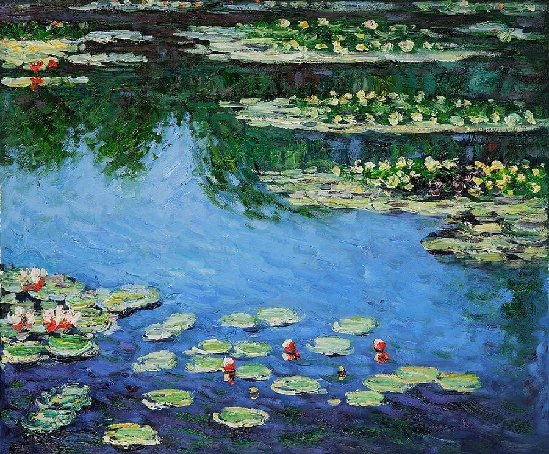

"Water Lilies, Harmony in Blue” is a well-known painting by Claude Monet from 1917. The medium used for this painting is oil on linen canvas. It is one of his later works and shows his interest in color, reflections and the calm beauty of the pond in Giverny.
In this painting, Monet uses mostly blue and violet shades to show the surface of the water. Reflections of green trees blend softly into the pond, creating a peaceful effect. The composition includes oval-shaped lily pads floating on the water, along with small touches of red, pink, and yellow in the flowers.
The artwork is admired for the way it captures the changing and delicate beauty of nature.